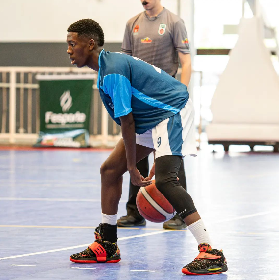

Sobre Mim
Meu nome é Wesley Douglas tenho 18 anos, estudo no CEDUP onde faço o curso técnico de informática.
Contato: infowesley2022.01@gmail.com
Rede social: GitHub
Projetos
Créditos e Referências
Créditos: Cauã Vanini, Wesley Douglas e Gabriel Sombrio
Referências: YouTube Css3generator